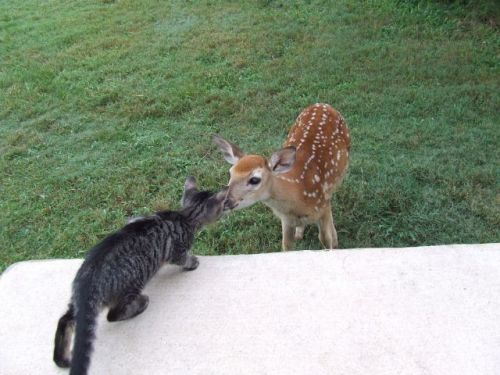

Welcome to Deer Haven — a peaceful space dedicated to the beauty, grace, and mystery of deer. Whether you're a wildlife enthusiast, an artist looking for inspiration, or just someone who loves gentle creatures, you're in the right place.
Did You Know?
- Deer can run up to 40 miles per hour to escape predators.
- Male deer are called bucks, and females are called does.
- They have an excellent sense of hearing and smell.